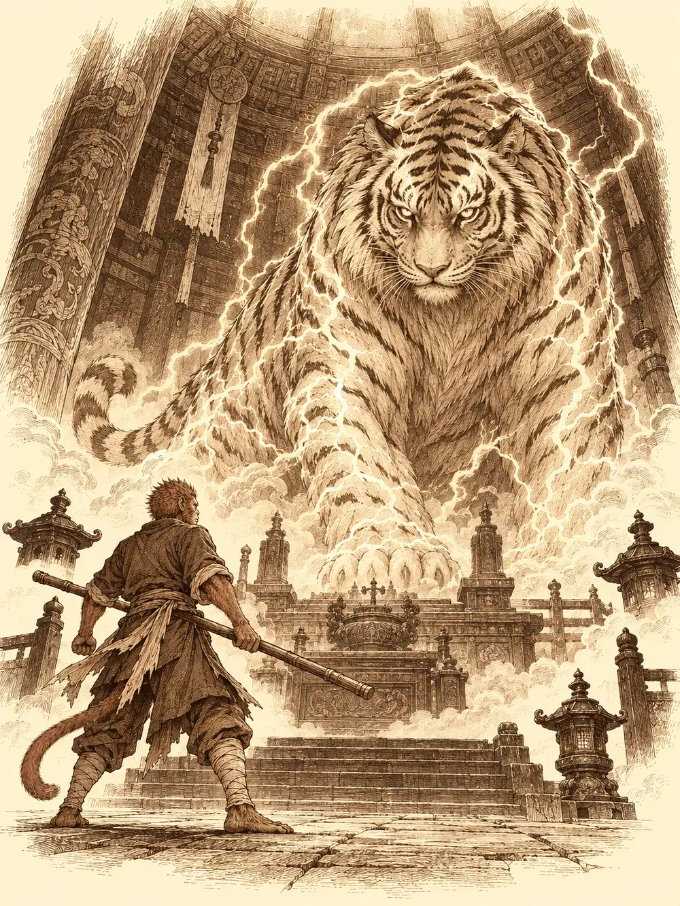

Capítulo 44
El guardián del Oeste
Libro IV · Los guardianes del Oeste y del Este
En los salones del palacio de Sho olía a té y a cera de suelo recién frotado. El shogun bebía entre nobles y, al ver entrar a los cazadores, levantó el brazo para que se acercaran. Rua les dedicó un gesto de saludo. Unos criados trajeron cojines.
Cada uno llegaba de lo suyo. Hayate había terminado por fin su templo. Sun seguía buscando su nube y probando disfraces que no engañaban a nadie. Maroxi llevaba la mochila abultada y ningún comprador para el mímico que había sacado de la cueva. Erk se había puesto a aprender herboristería y lo había pagado en herramientas: arrancaba las raíces con tanta fuerza que había mellado la mitad.
"Vuestro compañero me dijo que necesitabais un sitio en Sho", dijo el shogun, señalando a Maroxi como quien recuerda un nombre a medias. "Así que os hemos preparado algo. Incluso mi mujer ha ayudado".
Los llevó por los patios amurallados del castillo. Era la época de los cerezos y los pétalos cubrían el suelo de rosa. Tras una puerta de la muralla, en el patio trasero, entre árboles en flor, había una casa de tejado nuevo y vigas limpias, salvada del abandono a fuerza de manos. Su carro estaba aparcado delante, con todo lo que Guxi había ido trayendo desde Ukio. Junto a la puerta, el shogun se acordó de algo.
"El otro día vino una jovencita que decía ser vuestra líder. La dejamos entrar".
Sentada a la mesa, con los brazos cruzados, estaba Shizuka. Apartó con las dos manos al primero que fue a abrazarla.
"Me habéis dejado sola en Ukio. Mosto no paraba de beber y siempre se quedaba dormido".
El bebé y los demás seguían bien cuidados en la base de Ukio, le recordaron. A ella le daba igual. Había venido con el nekomata, que dormitaba estirado sobre un cojín, y traía una queja peor.
"Además vino un bicho raro. Entró diciendo que venía de vuestra parte para cuidarme".
"Gluglu", dijo alguien. "Es amigo nuestro".
"Era". La niña miró de reojo al gato. "Se le tiró encima y se lo comió de un bocado".
Hayate se agachó junto al nekomata y le habló en silvano. El gato respondió con desdén: un desconocido había entrado sofocado anunciando que venía a cuidar a la niña, y él la había defendido. Nadie le había dicho que el pescado fuera amigo de nadie. Entonces Hayate oyó, muy al fondo, una voz diminuta que resonaba dentro de la boca del animal, como desde un pozo. Le pidió con calma que lo soltara. El nekomata arqueó el lomo, tosió como quien echa una bola de pelo y Gluglu salió disparado sobre la mesa, vivo, empapado de babas y cubierto de pelos negros.
"Bienvenidos a nuestra casa", dijo el gato, y volvió a estirarse.
El shogun se tocó la barba y aceptó las disculpas riendo por lo bajo. Eran extraños, admitió, pero divertidos. Les enseñó el cofre que habían dejado dentro con sus cosas y se despidió.
No había salido del patio cuando un anciano llegó corriendo, cargado de libros. Toshi, el bibliotecario, extendió sobre la mesa un mapa enorme de Kuroto con marcas al norte, al sur, al este y al oeste, las mismas que los cazadores habían copiado.
"Son templos antiguos, señor. Templos sagrados".
En cada uno, según sus papeles, habitaba un yokai muy poderoso, y cuando los cuatro estaban despiertos defendían la isla del mal que se avecinaba. Hacía muchos años que nadie se acercaba. Toshi no sabía si estaban en ruinas ni si sus guardianes seguían vivos; había leído que existían pruebas para ganarse el favor de cada criatura, y poco más. Los cazadores separaron entonces lo que se les había mezclado: las tropas marcadas en el plano del científico estaban en dos puntos del sur, distintos de aquellos cuatro. Si Otakemaru conocía los templos, querría impedir que despertaran.
El más cercano, señaló Toshi, era el del Oeste, en una isla pequeña justo al sur de Sho. El barco que les habían prometido los pescadores aún estaba por construir, y el shogun, preocupado, les ofreció uno suyo con capitán y marineros. Se marchó dando órdenes a los soldados. Toshi se quedó escribiendo a toda velocidad con una letra que solo él entendía.
Shizuka quiso ir al templo y le dijeron que no: alguien tenía que cuidar de Gluglu, que seguía en la mesa hecho un charco. La niña lo tocó con la punta de su espada de madera.
"¿Y esto era vuestro amigo?".
"Sabe unas adivinanzas muy divertidas. Si lo cuidas, seguro que juega contigo".
Shizuka suspiró, lo agarró de una aleta y se lo llevó a rastras como a un peluche. El gato sonrió. Era la primera vez que le veían hacerlo.
Antes de salir, Erk le enseñó a Maroxi las cabezas que había recogido en el bosque del instructor, aquellas criaturas que tenían una lira por rostro. Madera y cuerdas, dijo el mago; que se las quedara el bardo. Las dejaron sobre la mesa con una nota.
En la oficina de oficios compraron licencias y herramientas: Maroxi se hizo alquimista, Sun desollador y Hayate peletero. Erk visitó a Chami, que la recibió con un abrazo y un "ay, hija mía" salido del pecho, le dio su parte de lo vendido, ropa nueva para el viaje y veinticuatro croquetas envueltas en papel. Después Erk pagó cien monedas al herrero para que le arreglara las herramientas.
Maroxi compró hierbas al alquimista por cincuenta monedas y le pidió un rincón de la mesa para intentar allí mismo su primera poción. Se le olvidó avivar el fuego a tiempo. Lo que salió del cazo sabía a té malo y no curaba nada, aunque el mago aprendió en qué se había equivocado. Hayate, a su lado, cosió con un trozo de piel unos guantes de cuero. Les quedó un borde deshilachado y una costura abierta, pero se los puso con orgullo: así las plumas de las flechas no le rozarían las manos.
Sun fue a ver al sacerdote con el libro bajo el brazo. Le habló de nubes que volaban y se podían pisar, que llevaba semanas buscando sin encontrar. El sacerdote leyó el lomo, El Rey Mono, y levantó la vista despacio.
"¿Y dice usted que es este?".
"Soy un mono y soy un rey. De la montaña de los melocotoneros".
El sacerdote escuchó el resto: que había partes de esa montaña que Sun no recordaba, que lo atribuía a un golpe en la cabeza. Le aconsejó averiguar primero lo del golpe y dejar las nubes para después. Sun salió convencido de que en Sho no sabían tratar a la realeza.
La travesía duró dos días de buena mar. Hayate los pasó subido a un mástil, de vigía, rezando a su dios del viento. Erk volaba junto al casco, se lanzaba al agua como un martín pescador y salía con peces en el pico. Maroxi estudiaba sus manuales de alquimia. Sun, aburrido, se disfrazó de marinero, imitó los andares de la tripulación y se plantó delante del mago con la voz cambiada.
"Señor, lo precisan en cubierta".
Maroxi ni levantó la vista. "Sun, guárdate la cola. Y suelta el palo. Y ponte zapatos, por favor".
Entre sus papeles, el mago encontró una carta que no recordaba haber guardado, firmada por Danifae con un beso pintado junto al nombre.

Hola, guapo. Tengo que salir unos días a hacer unos trabajos con unos socios. Si vais a esos templos que marcamos en los mapas, tened cuidado con las trampas. Y un favor: debería haber allí una bola redonda de color azul cielo. ¿Me la traeríais? Es una baratija.
La dobló y la guardó sin comentarla.
La isla era una montaña que salía casi a pico del agua, ceñida por un camino de tierra en espiral que parecía obra de una civilización antigua. En lo alto, una nube de tormenta dejaba caer rayos sin descanso. Subieron casi un día entero. A media ladera empezó a llover; más arriba atravesaron la nube y la dejaron a sus pies, encendida por dentro. Maroxi notó en ella magia de evocación, sin saber de dónde venía. Sun tocó con el bastón una nube que brillaba y el rayo bajó por el metal; lo soltó justo a tiempo.
Erk, unos pasos por delante, encontró huellas que iban hacia el templo y, en un pasillo, un cuerpo carbonizado con la máscara de los sectarios que ya conocían, los de la aldea tanuki y el almacén de Sho.
"Danifae dijo que tuviéramos cuidado con las trampas", recordó Maroxi.
"No te fíes de ella", contestó Hayate.
El templo era una cúpula inmensa, deteriorada pero imponente, decorada con rayos y tormentas de oro dedicados a dioses que ninguno conocía. Sun avanzó tanteando las losas con el bastón, paso y golpecito, hasta que las dos gárgolas del pasillo se iluminaron y un rayo cruzó de una a otra a través del metal. Al mono se le erizó hasta el último pelo de la cola. Los alados pasaron volando; Maroxi encogió su cuerpo hasta el tamaño de Shizuka y se dejó llevar en brazos. Sun intentó saltar, cayó sobre la trampa y se llevó otra descarga. En el cadáver, Hayate encontró un papel medio quemado con un mapa de aquel lugar y unas palabras sueltas, "ir a buscar", que se perdían en el carbón.
Dentro, la luz salía de unos cristales en forma de huevo donde chisporroteaba un rayo diminuto, encerrado como un insecto. Maroxi no halló en ellos rastro de magia: parecía obra de ingeniería, como las torretas de Guxi. Una mano espectral surgió junto al mago y empujó una puerta doble de piedra marcada con garras.
Detrás había una sala ovalada con un agujero en el suelo y otro en lo alto de la cúpula, por el que caía la lluvia. Junto a un altar, dos sectarios discutían.
"Deberíamos poner esto aquí. Es lo que le falló al otro".
Maroxi entró invisible. Había un tercero muerto en el suelo, quemado como el del pasillo. Antes de que pudiera averiguar nada, un rayo cayó por la cúpula sobre el que manipulaba el altar y lo fulminó. El otro, del susto, tropezó y cayó por el hueco central. Su grito se apagó abajo.
"Han muerto los tres", jadeó Maroxi al volver. "Yo no he hecho nada".
En el altar había una figurilla de tigre, otra de un rayo y los cuatro puntos cardinales grabados en la piedra. Los murales mostraban un tigre envuelto en relámpagos. Sun encogió el bastón hasta guardárselo en el bolsillo y, con la vista puesta en el techo, deslizó el tigre por su guía hasta el oeste. Sonó un clac. Colocó el rayo en el hueco del centro.
El altar crujió como un engranaje. Las puertas se cerraron de golpe, con dos de ellos todavía fuera, y una voz llenó la cúpula.
"¿Quiénes me llaman?".
Sobre el altar se formó un tigre blanco, enorme, con rayos que le recorrían el cuerpo como venas de luz.
"Cazadores a las órdenes del shogun. Defensores de estas tierras".
"No sé qué es un shogun. Si sois buenos o no, dependerá de vuestras acciones". Bajó del altar y los olió uno por uno. Le hablaron de Otakemaru, de los sectarios muertos en su templo, de los mapas. "Los otros guardianes no están despiertos. No los noto. Pero no habéis venido solos".
Las puertas se abrieron y entraron los que esperaban fuera. La voz del tigre les erizaba la piel.
"¿Venís a pedirme que os proteja de ese Otakemaru?".
"A nosotros no. A toda Kuroto".
"Bien. Pues demostradme lo que valéis".
El tigre se movía como un relámpago, saltaba a las paredes y volvía al suelo antes de que nadie terminara de apuntar. En el agujero de la cúpula se formó una nube giratoria y, cada vez que alguien atacaba, un rayo bajaba de ella a castigarlo. Los ojos de la bestia se encendieron y una descarga saltó de Sun a Maroxi y de Maroxi a Hayate.
Hayate y Erk sostuvieron la pelea con sus arcos. Maroxi danzó con la espada y lanzó una esfera de colores que estalló en ácido sobre el pelaje del tigre, pero los rayos se le acumulaban encima y acabó en el suelo, inconsciente. Sun se arrodilló a su lado, le aflojó la ropa y lo atendió hasta que el mago abrió los ojos y se incorporó. La nube bajó entonces y los envolvió, y Hayate y Sun sintieron la piel tensa, indefensa ante el siguiente rayo.
La última flecha se clavó en un ojo. El tigre rugió, se arrancó el astil, se quitó las demás flechas una a una y se sacudió el ácido del lomo.
"Habéis aguantado bien. La mayoría". Miró a Maroxi. "Si despertáis a los otros guardianes, protegeremos Kuroto. Cada uno os pedirá que demostréis vuestra valía de una manera distinta".
Apoyó la zarpa en el pecho de Maroxi y la túnica blanca del mago se tiñó del azul exacto del rayo; la tela lo abrigaba como una armadura y la electricidad ya no le mordía. Maroxi aprovechó para preguntar por una esfera.
"Llevaos la que queráis. Alguna habrá".
A Sun le dijo que pegaba bien, aunque le faltaba humildad para aprender, y le tocó los guantes: con ellos podría derribar y apartar de un golpe a cuanto tuviera alrededor. A Hayate le habló como a quien entiende el poder de las tormentas, y al tocarle un anillo sencillo bajó un rayo por la cúpula; el anillo podría lanzar uno cada día. Por último rodeó la columna tras la que se había escondido Erk, rozándola con la cola.
"Tranquila, hija mía. Has demostrado tu valentía".
Las cuerdas que Erk llevaba atadas a los pies se tiñeron de azul. Con ellas podría desaparecer y reaparecer unos pasos más allá, una vez al día. Los cuatro objetos quedaban unidos a ellos y solo a ellos.
"Ahora tenéis la bendición de Byakko. Mirad al cielo y buscad el rayo, y allí estaré".
Subió al altar, se difuminó en un resplandor azul y un último rayo cayó sobre él. Cuando la luz se fue, el tigre ya no estaba. Erk se quedó con las ganas de rascarle la barbilla.
Casi todos los libros de la sala hablaban de Byakko, guardián del Oeste y señor del rayo. Sobre la mesa encontraron una esfera de cristal azulada, idéntica a la de la carta, y Maroxi se la llevó junto a un libro muy viejo. Registró además, con Hayate, el cadáver del altar, y halló una nota menos quemada que la primera. Decía, breve y apresurada, que fueran al templo y destruyeran a la criatura.
"Venían a matarlo", murmuró Maroxi. Ninguno se atrevió a decir si lo habrían conseguido.
Cuando salieron, la tormenta seguía rodeando la montaña por debajo de ellos, pero se había amansado, y los rayos caían ahora despacio, como si alguien los vigilara.